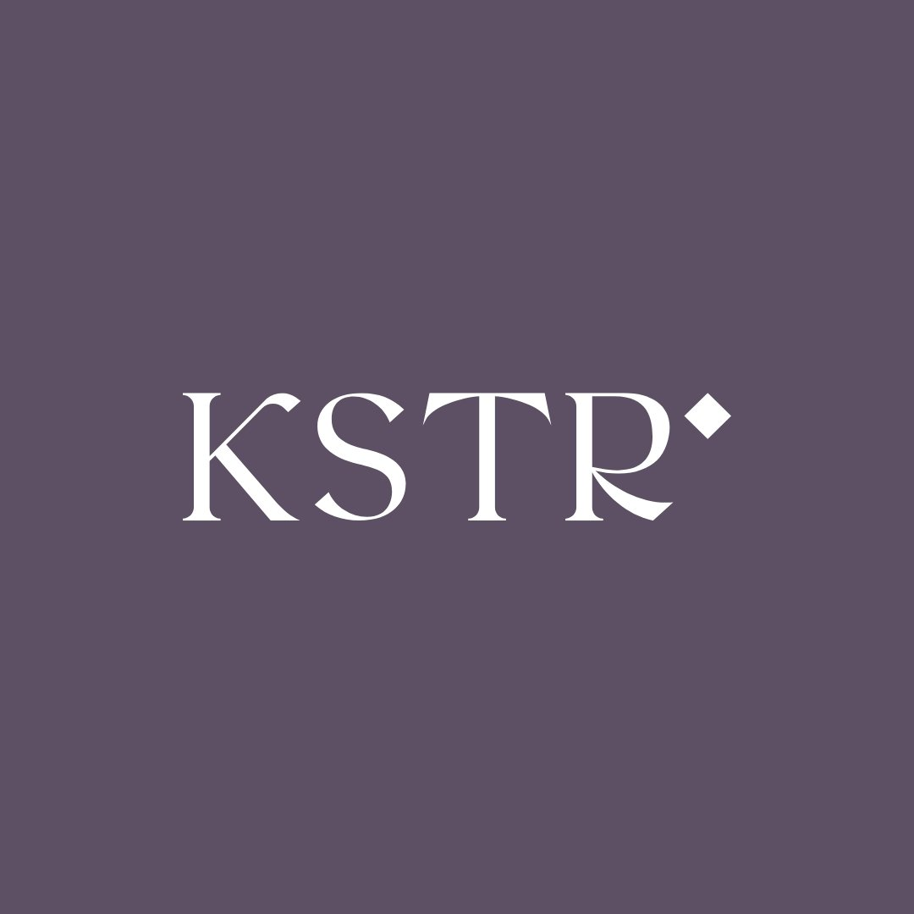
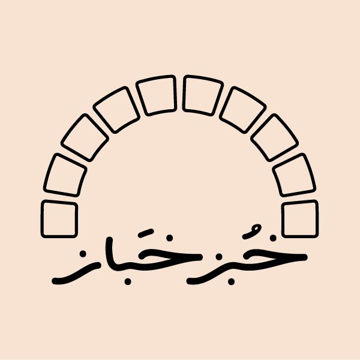
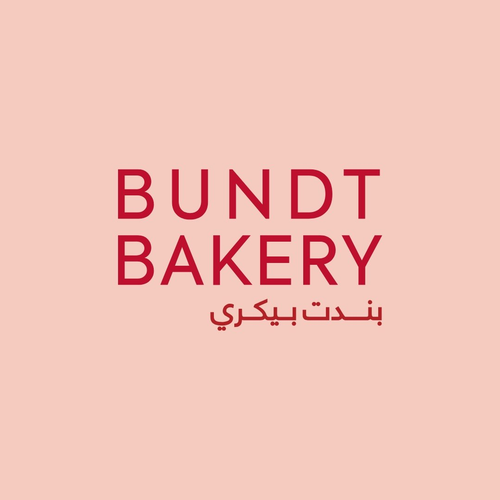
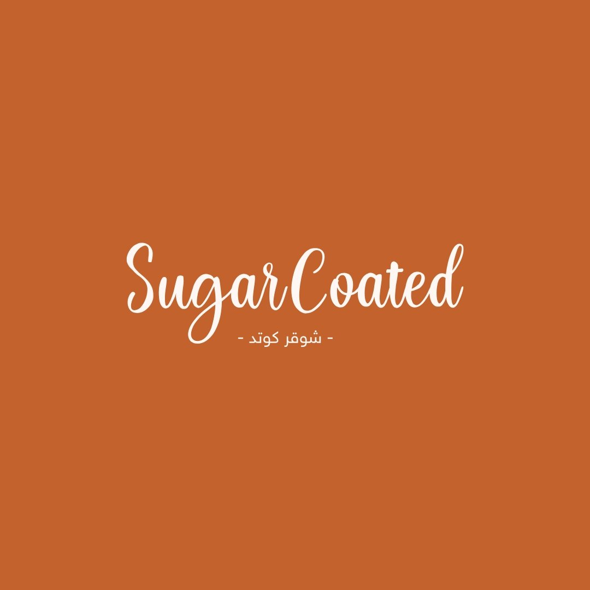
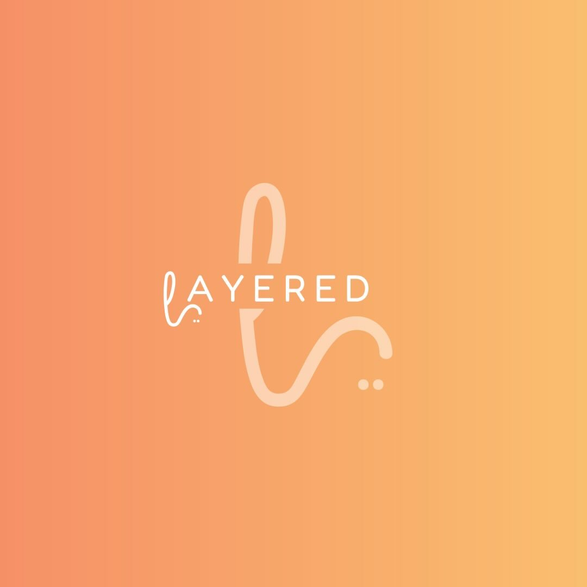

نظرة عامة — محفظة البراندات والملخص التنفيذي
المطبخ المركزي الموحد يدير 6 علامات تجارية متكاملة بكفاءة إنتاجية قصوى
العلامات التجارية
6 براندات
تحت مظلة مطبخ مركزي واحدقنوات البيع
5 قنوات
Retail · MT · Cash Van · Outlet · B2Bالهدف الاستراتيجي
سوق نمو
الإدراج خلال 18–24 شهراًالمحاور الاستراتيجية
5 محاور
موزعة بخطة تشغيلية متكاملةالملخص التنفيذي — الإطار التشغيلي وهدف الخطة
تُعد شركة ومصنع مذاق المتحدة للتجارة (United Taste) إحدى المجموعات الوطنية الرائدة في قطاع الأغذية والمشروبات (F&B) بالمملكة العربية السعودية. تعتمد الشركة على نموذج المنظومة متعددة العلامات التجارية (Multi-Brand Ecosystem)، حيث يعمل مطبخ مركزي موحد على إنتاج وتشغيل 6 علامات تجارية متخصصة تتكامل لتغطية كل شرائح المستهلك السعودي على مدار اليوم.
تهدف هذه الخطة الاستراتيجية إلى تحويل الشركة من الاعتماد المباشر على مبيعات التجزئة والتوصيل إلى كيان صناعي وتجاري مستدام ومورّد استراتيجي لقطاعات الأعمال (B2B/B2G)، متواجد في كافة قنوات البيع العريض (Mass Market)، مجهز بمؤشرات قياس أداء (KPIs) دقيقة لكل محور.
المحرك التشغيلي — المطبخ المركزي (Central Production Kitchen)
المخبوزات والخبز
Khoubz · Dime
المطبخ المركزي
مركز الإنتاج الموحد
الكيك والحلويات
Bundt · Layered · Sugar Coated
الإنتاج والتغليف
KSTR · Delivery
محفظة العلامات التجارية الستة (Brand Profiles)
Bundt Bakery
فخامة الكيك الكلاسيكي وأناقة الجمعاتمتخصصة في كيك البوندت المخبوز في قوالب هندسية مفرغة. يدمج بين القوام الهش والصلصات الغنية التي تُسكب تفاعلياً — الخيار الأول للجمعات العائلية والهدايا.

مطبخ سحابي · طلب مسبقLayered
هندسة طبقات النكهة وكيك المناسبات الفاخربراند مترف في صناعة الكيك متعدد الطبقات يركز على توازن دقيق بين القوام المقرمش والإسفنجي والكريمي مع تغليف فاخر للمناسبات.

مخبز حرفي · تزويد B2Bخبز / Khoubz
أصالة التخمير الطبيعي والمخبوزات الحرفيةمخبز حرفي عصري يلتزم بأصول الخبز التقليدي باستخدام التخمير الطبيعي (Sourdough) — يهدف لجعل الخبز الطازج جزءاً أساسياً من الحياة اليومية.

مطبخ سحابي · تطبيقات توصيلSugar Coated
عالم الحلويات المبهجة والشوكولاتة الغنيةعلامة حيوية تركز على الحلويات المغطاة بالشوكولاتة والصلصات الغنية — جاذبة بصرياً ومثالية لمشاركتها على منصات التواصل الاجتماعي.

Grab & Go · فرعانKSTR / كستر
الانتعاش الكريمي والحلويات الباردة السريعةمفهوم شبابي عصري يركز على الكاسترد المثلج (Frozen Custard) والآيس كريم الحرفي بأسلوب الخدمة السريعة — يدمج بين القوام الكريمي والمخبوزات الدافئة.

براند سحابي · Virtual BrandDime
الوجبات الخفيفة والساندويتشات العصرية السريعةعلامة سحابية مرنة تقدم الساندويتشات المبتكرة والوجبات الخفيفة من مخبوزات طازجة وصلصات خاصة — مصمم لأسلوب الحياة المزدحم والتوصيل السريع.
المحور الأول: حصر الجهات والتسجيل كمورد (Vendor Registration & Prequalification)
الهدف الاستراتيجي: بناء البنية التحتية النظامية للتأهيل الرسمي لدخول المناقصات، عقود التوريد، والطلبات الحكومية والشركات الكبرى. يُعدّ هذا المحور الأساس الذي تنبني عليه جميع قنوات B2B و B2G.
خطوات التنفيذ الثلاث
التأهيل الحكومي وشبه الحكومي
التسجيل والاعتماد الفوري في منصة إعتماد، وتحديث بيانات المصنع لدى الوزارات، الهيئات، والشركات القابضة (المستشفيات، القطاعات العسكرية، الجامعات).
تأهيل قطاع الضيافة والإعاشة (HoReCa)
حصر سلاسل الفنادق، شركات الطيران (Saudia, Riyadh Air)، وشركات الإعاشة الكبرى لبناء علاقات شراكة تزويدية طويلة الأجل.
إعداد ملف التأهيل الموحد (Vendor Deck)
صياغة ملف فني ومالي احترافي يُبرز قدرات المصنع الإنتاجية، شهادات الجودة (HACCP/ISO)، وسجل أعمال البراندات الستة المدعومة بالأرقام.
توصية تشغيلية: يجب استخراج شهادات HACCP وتحديث السجل التجاري قبل رفع أي طلب تأهيل، إذ تُعدّ من المتطلبات الإلزامية لدى 85% من الجهات الحكومية.
مؤشرات الأداء الرئيسية (KPIs) — المحور الأول
قائمة عقود الإعاشة والتموين المرصودة
B2B/B2G Prospects| م | اسم عقد التموين | الجهة المستهدفة | النوع | القيمة التقديرية السنوية |
|---|---|---|---|---|
| 1 | تموين وإعاشة رحلات الطيران | الخطوط الجوية العربية السعودية (Saudia) | إعاشة جوية | 45,000,000 ريال |
| 2 | إمداد الحلويات والمخبوزات VIP | طيران الرياض (Riyadh Air) | ضيافة خاصة | 32,500,000 ريال |
| 3 | تموين وتغذية نزلاء المستشفيات | وزارة الصحة (Ministry of Health) | B2G مناقصات | 68,000,000 ريال |
| 4 | توريد حلويات المناسبات والمؤتمرات | أرامكو السعودية (Aramco VIP) | ضيافة شركات | 18,200,000 ريال |
| 5 | توريد الأغذية لمشاريع الترفيه | القدية للاستثمار (Qiddiya Events) | سياحة وفعاليات | 14,500,000 ريال |
المحور الثاني: هندسة قنوات البيع الخمسة (Omnichannel Sales Management)
الهدف الاستراتيجي: توزيع منتجات المصنع على 5 قنوات بيعية مستقلة، مع تخصيص مدير لكل قناة (Key Account Manager) بخطة عمل ومؤشرات أداء واضحة لضمان الحوكمة والسيطرة التامة.
المسؤول عن القناة
مدير قطاع التجزئة والنقاط المستقلة (Retail Channel Manager)القناة الأولى: الفروع المباشرة، النقاط المستقلة، وزوايا العرض
- المفهوم: نشر فروع ونقاط بيع سريعة (Kiosks / Shop-in-Shop) لتغطية البراندات الرئيسية.
- إدارة وتطوير الفروع الحالية (Bundt Bakery 5 فروع، KSTR فرعان، Khoubz فرع).
- التوسع في نقاط بيع سريعة في المجمعات، محطات القطارات، والأماكن الحيوية.
- توفير سلة منتجات مشتركة للبراندات الستة بكثافة عالية وتكلفة رأسمالية منخفضة (CAPEX).
- تقنيات البيع المتقاطع (Cross-Selling) لرفع متوسط حجم السلة بـ 15%.
المسؤول عن القناة
مدير قناة التجزئة الحديثة والسوبرماركت (Modern Trade Account Manager)القناة الثانية: أسواق التجزئة الكبرى والسوبرماركت (Modern Trade / FMCG)
- المفهوم: تحويل المنتجات المناسبة إلى منتجات استهلاكية سريعة الدوران (FMCG).
- التسجيل كمورد معتمد لدى: التميمي، الدانوب، بن داود، بنده، العثيم، لولو.
- إعادة تصميم التغليف لتلائم معايير البيع على الأرفف (Shelf-Ready Packaging).
- التفاوض على رسوم الأرفف (Listing Fees) والحصول على مواقع عرض استراتيجية.
- تطوير خطوط تغليف بتقنيات حفظ حديثة (Long Shelf-Life / Freeze-Baked).
المسؤول عن القناة
مشرف المبيعات الميدانية والكاش فان (Cash Van Fleet Supervisor)القناة الثالثة: التوزيع الميداني السريع للمقاهي (Cash Van Fleet)
- المفهوم: اختراق سوق المقاهي المستقلة بنموذج النقد المباشر والتسليم الفوري (Cash & Carry).
- تقسيم الرياض إلى خطوط سير جغرافية (Van Routes) لتغطية شاملة.
- تشغيل سيارات توزيع مبردة بكادر مناديب ميدانيين للبيع والتحصيل الفوري.
- استهداف المقاهي المستقلة (Single-Door Cafés) ذات القوة الشرائية اليومية.
- سياسة صفر ائتمان — تحصيل نقدي 100% دون دين آجل.
المسؤول عن القناة
مسؤول قناة التصفية والمنتجات الاقتصادية (Outlet & Discount Channel Officer)القناة الرابعة: متاجر الحلى المخفض والخطوط الاقتصادية (Zero-Waste Strategy)
- المفهوم: تحويل الهدر والتكاليف الضائعة إلى سيولة نقدية مباشرة عبر تصنيع خطوط اقتصادية.
- تطبيق استراتيجية Zero-Waste: استغلال زوائد التصنيع وتحويلها لمنتجات مبتكرة (Cake Pops, Trifles).
- التعاقد مع سلاسل الحلى المخفض: أول الحلى، أهل الحلى.
- خفض نسبة الهدر في المطبخ المركزي إلى أقل من 2% إجمالياً.
- الحفاظ على هامش ربح لا يقل عن 40% بعد خصم تكاليف إعادة التصنيع.
المسؤول عن القناة
مدير مبيعات الشركات وكبار العملاء (B2B Key Account Manager)القناة الخامسة: مبيعات الشركات، الإعاشة، والمناقصات (B2B & Government)
- المفهوم: إبرام عقود التوريد طويلة الأجل والتصنيع لحساب الغير (Private Labeling).
- الدخول في المناقصات الحكومية عبر منصة إعتماد وخارجها.
- تصميم باقات إهداء مخصصة للشركات للفعاليات والمناسبات الكبرى.
- تصنيع خاص (Private Labeling) للمقاهي والفنادق والشركات الكبرى.
- بناء علاقات شراكة مع متعهدي الإعاشة الكبار (Catering Operators).
دورة إبرام عقد B2B (8 خطوات)
استلام RFP
استقبال طلب التسعير وتفاصيل المنتجات.
دراسة فنية
تحليل التكلفة وتقدير الطاقة الإنتاجية.
جلسة تذوق
تحضير عينات لمطابقة جودة العميل.
العرض التجاري
تسليم المقترح المالي النهائي.
خطاب النوايا
توقيع LOI ومراجعة شروط الدفع.
توقيع العقد
SLA + الشروط القانونية للتوريد.
جدولة الإنتاج
إدخال المنتجات في الخطة اليومية.
تقييم دوري
فحص رضا العميل وتجديد العقد.
ملخص مصفوفة مؤشرات الأداء لقنوات البيع الخمسة (KPI Matrix)
| القناة البيعية | المسؤول عن القناة | مؤشر الأداء الرئيسي | المستهدف القياسي |
|---|---|---|---|
| 1. الفروع المباشرة والنقاط | مدير قطاع التجزئة | مبيعات النقطة اليومية + نمو السلة | نمو 8% شهرياً |
| 2. السوبرماركت والتجزئة الحديثة | مدير الـ Modern Trade | عدد المدرجات (SKUs) + دوران الرف | 10 SKUs / مرتان/أسبوع |
| 3. الكاش فان والمقاهي | مشرف الكاش فان | التحصيل النقدي اليومي + المقاهي المخدومة | 100% نقد / 25 مقهى |
| 4. الحلى المخفض والأوتلت | مسؤول قناة التصفية | حجم الكميات المباعة + نسبة الهدر | هدر < 2% |
| 5. الشركات والمناقصات (B2B) | مدير كبار العملاء | قيمة العقود المبرمة + نسبة الترسية | ترسية ≥ 30% |
المحور الثالث: شهادة المحتوى المحلي والقيمة الوطنية (Local Content Strategy)
الهدف الاستراتيجي: بناء ميزة تنافسية رسمية تضمن أولوية الترسية في المشاريع الحكومية والكيانات الوطنية. شهادة المحتوى المحلي تمنح المصنع أفضلية سعرية بنسبة 10% في كل مناقصة حكومية.
استخراج الشهادة الأولى فوراً
استخراج شهادة المحتوى المحلي بالوضع الحالي للمصنع لاستخدامها فوراً في المناقصات والعروض الحكومية المقدمة.
خطة رفع نسبة المحتوى المحلي
وضع خطة زمنية مستهدفة لرفع نسبة المحتوى المحلي في القوائم المالية بمقدار 10-15 نقطة مئوية للسنة القادمة.
التأهيل التنافسي في المناقصات
توظيف الشهادة في 100% من العروض الحكومية للاستفادة من تفضيل السعر الوطني في جميع المناقصات والمنافسات.
الأثر التنافسي: شهادة المحتوى المحلي تمنح المصنع أفضلية تلقائية بنسبة 10% على المنافسين الأجانب في تقييم العروض الحكومية، مما يرفع احتمالية الترسية بشكل مباشر في عقود B2G.
المحور الرابع: التوسع الشامل، الشراكات الاستراتيجية، والنمو
الهدف الاستراتيجي: رفع القيمة السوقية للمصنع والانتقال به من إطار العمل المحلي إلى صرح استثماري وصناعي واسع الانتشار، عبر ثلاثة مسارات متوازية للنمو.
مسار الانتشار والشراكات الوطنية
National Footprintعقد شراكات استراتيجية مع الكيانات الوطنية والتوسع بنموذج "الحضور في كل حي" (نموذج بيت الشاورما). بناء تحالفات مع محافظ الصناديق الاستثمارية للتوسع السريع بتكلفة منخفضة.
مسار التحول إلى FMCG
نموذج شركة ديمةتطوير خطوط إنتاج وتغليف بتقنيات حفظ حديثة (Freeze-Baked / Packaged Sweets) للبيع الجماهيري العريض — تحويل المنتجات لسلع استهلاكية سريعة الدوران على مستوى وطني.
مسار الإدراج والتخارج المالي
Financial Listing Strategyالتهيؤ والحوكمة للإدراج في سوق نمو الموازي تمهيداً للانتقال لـ تداول الرئيسي أو الاستحواذ. بناء منظومة حوكمة مؤسسية تستوفي متطلبات هيئة السوق المالية (CMA).
مسار الإدراج: نمو → الموازي → تداول الرئيسي أو الاستحواذ. يتطلب هذا المسار إعداد القوائم المالية المدققة وبناء منظومة حوكمة مؤسسية كاملة (Board, Audit Committee, Disclosure) قبل 12 شهراً من موعد التقديم.
المستهدف الشهري الإجمالي (100 مهمة)
التراكم السنوي المستهدف خلال 12 شهراً
جدول توزيع الأهداف شهرياً عبر القنوات الخمسة
| الشهر | تجزئة وفروع | بيع عريض MT | مبيعات B2B | التوسع الجغرافي | خطوات التعاقد | المجموع |
|---|---|---|---|---|---|---|
| الشهر 1 | 1 | 1 | 1 | 0 | 1 | 4 |
| الشهر 2 | 1 | 1 | 1 | 1 | 2 | 6 |
| الشهر 3 | 1 | 1 | 1 | 1 | 2 | 6 |
| الشهر 4 | 2 | 2 | 2 | 1 | 3 | 10 |
| الشهر 5 | 2 | 2 | 2 | 1 | 3 | 10 |
| الشهر 6 | 2 | 2 | 2 | 1 | 3 | 10 |
| الشهر 7 | 2 | 2 | 2 | 1 | 3 | 10 |
| الشهر 8 | 2 | 2 | 2 | 1 | 3 | 10 |
| الشهر 9 | 2 | 2 | 2 | 1 | 3 | 10 |
| الشهر 10 | 2 | 2 | 2 | 1 | 3 | 10 |
| الشهر 11 | 2 | 2 | 2 | 1 | 3 | 10 |
| الشهر 12 | 1 | 1 | 1 | 0 | 1 | 4 |
| الإجمالي السنوي | 20 هدفاً | 20 هدفاً | 20 هدفاً | 10 أهداف | 30 هدفاً | 100 هدف |
المحور الخامس: هيكلية الاتفاق المالي والمهني (Hybrid Compensation Model)
لتحديد الآلية العملية والمنصفة بين المستشار ومالك المصنع، يتم تقسيم الأتعاب إلى نموذج هجين (Hybrid Compensation) يحمي سيولة المصنع ويضمن أعلى درجات الالتزام لتحقيق النتائج المالية الفعلية.
الأجر الثابت (Part-Time Retainer)
مبلغ شهري مقطوع مقابل ساعات عمل استشارية أسبوعية لبناء النظم، متابعة الشهادات والاعتمادات، وإدارة مسؤولي القنوات الخمسة ومتابعة مؤشرات أدائهم.
عمولة الإنجاز (Success Percentage)
نسبة مئوية تُحسب وتُدفع بناءً على: عقود B2B المبرمة، أرباح قناة الكاش فان، وعقود الشراكات الاستثمارية. لا يدفع المالك النسبة إلا من الأرباح الإضافية الفعلية.
مؤشرات قياس أداء المستشار
Consultant KPIs Evaluationمعدل إنجاز خطة التطوير
Strategy Execution Rate — الالتزام بتنفيذ 90% من المخرجات المحددة في الجدول الزمني لكل محور من المحاور الخمسة.
معدل تحقيق أهداف الإيرادات
Revenue Target Attainment — تحقيق 85% على الأقل من إجمالي أهداف المبيعات لقنوات B2B والكاش فان.
كفاءة إدارة مسؤولي القنوات
Team Management Efficiency — توظيف وتشغيل مدراء القنوات الخمسة وتفعيل مؤشرات أدائهم خلال أول 60 يوماً من العقد.
شرط الصرف: تُدفع عمولة الإنجاز فور التحقق الموثق لكل هدف عبر تقارير مالية رسمية — أي تأخير في التسليم المالي يوقف احتساب العمولة حتى التسوية.